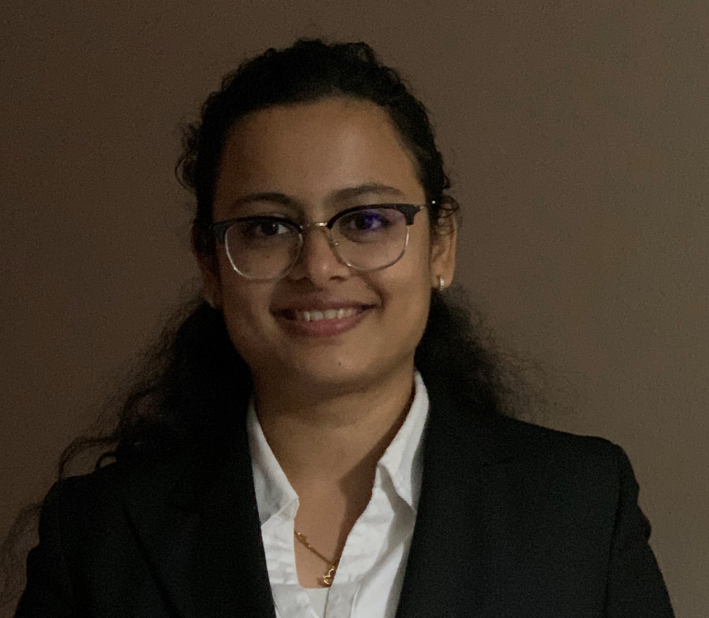
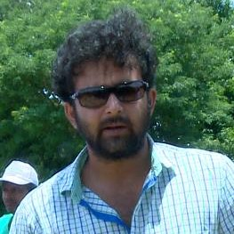

This webstie focuses on three industries namely: Paper, Petroleum Bulk and Chemical for toxins released in the environment. There are various factors that help determine the toxicity and the effects. We are using Fugitive Air, Carcinogenic compounds and Stack Air to illustrate the amounts of toxins the industries release every year from the years 2016 to 2018.
|  | Chinmayi KarmalkarChinmayi started pursuing her Masters at USF in Fall 2018. She is currently working at TECO Energy and considers Business Analytics as her dream job. Her contribution in this project are finding a database to create this website, create the logical database diagrams , writing content matter to make the user interface easy and describing the project on this page |
|  | Sachin Pratap SinghSachin has worked as an entrepreneur for almost 6 years in Ecommerce and bio-diesel companies after accomplishing Bachelor of engineering from Jabalpur engineering college. Currently he is pursuing his master’s in business analytics information system from USF |
Shishuraj KarmalkarShishuraj started pursuing his Masters in Business Analytics and Information Systems at USF in Fall 2019. His contributions in this project are creating and designing the website using HTML and CSS. |